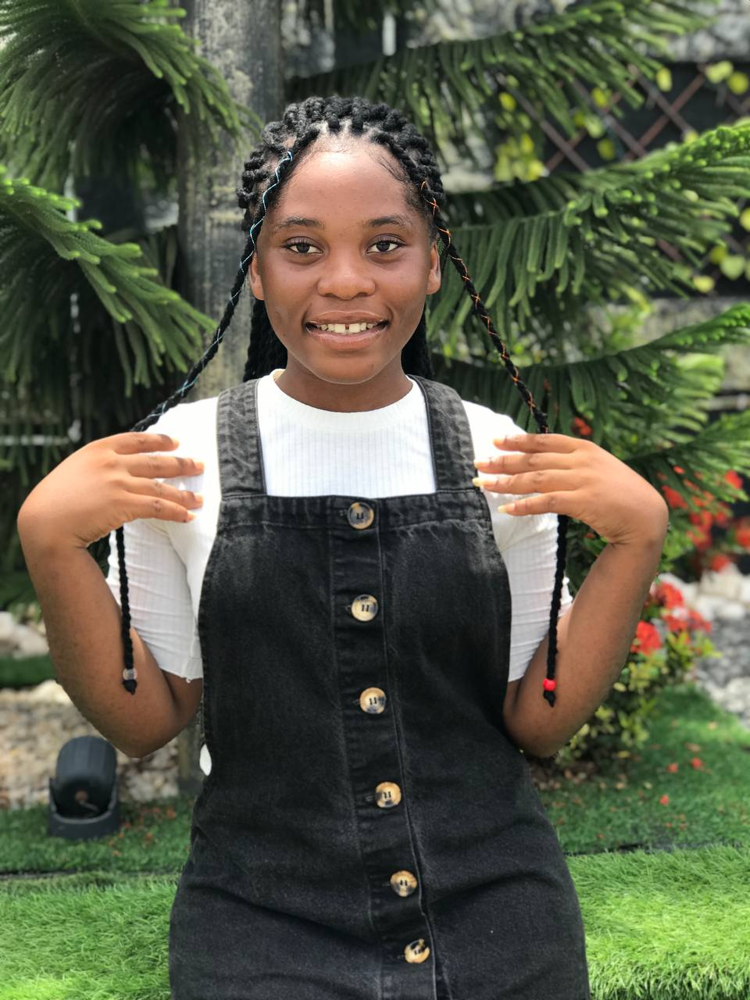

I'm a passionate and driven young lady who has a keen interest in tech and is on the journey of becoming a software developer.
I am dedicated to honing my skills and gaining a deep understanding of various programming languages, software development methodologies, and emerging technologies.
My goal is to contribute to innovative projects that solve real-world problems and make a meaningful impact in the tech industry
SKILLS
UI Design
LI possess a strong foundation in UI design, enabling me to create intuitive and visually appealing user interfaces. My approach to UI design is centered around the user, ensuring that each design is not only aesthetically pleasing but also functional and user-friendly.
I have experience with various design tools and methodologies, allowing me to effectively translate client requirements into cohesive and engaging designs.
My portfolio showcases a range of projects where I've successfully improved user experience through thoughtful and innovative design solutions
Web Development
I have a strong foundation in web development, with skills spanning front-end and back-end technologies. I am proficient in HTML, CSS, JavaScript, and various frameworks like React and Node.js. My expertise enables me to build responsive, interactive, and high-performance websites.
I focus on writing clean, maintainable code and implementing best practices to ensure the scalability and accessibility of web applications.
Search Engine Optimization
With a background in graphic design, I possess the creativity and technical skills to produce visually stunning graphics. I am experienced in using tools like Adobe Photoshop, Illustrator, and InDesign to create logos, marketing materials, and digital content.
My designs are tailored to convey brand messages effectively and captivate audiences, blending aesthetics with functionality to support overall communication goals.
Graphic Design
With a background in graphic design, I possess the creativity and technical skills to produce visually stunning graphics. I am experienced in using tools like Adobe Photoshop, Illustrator, and InDesign to create logos, marketing materials, and digital content.
My designs are tailored to convey brand messages effectively and captivate audiences, blending aesthetics with functionality to support overall communication goals.